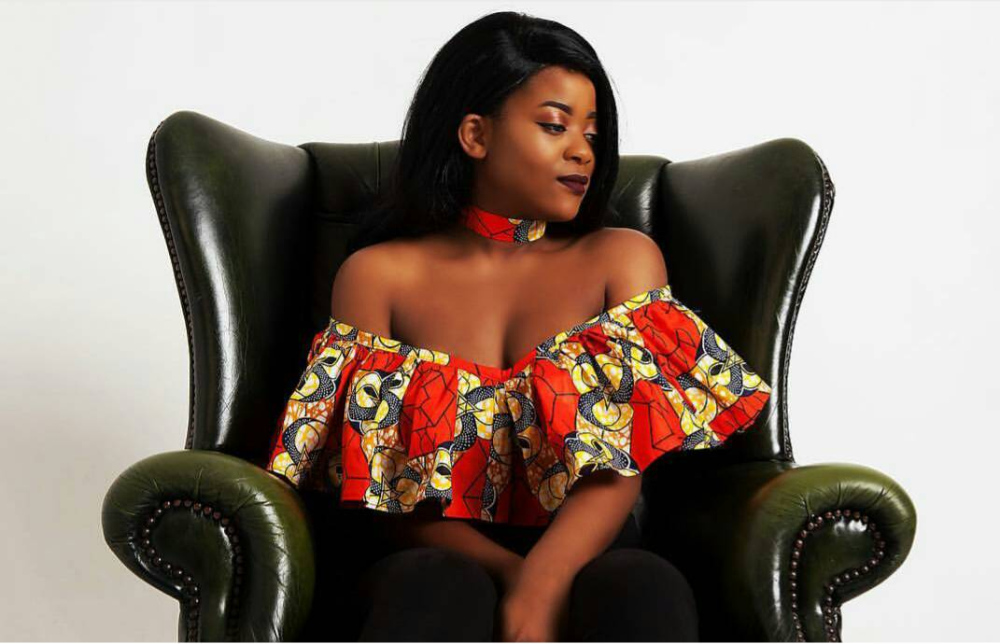

Lovelyn Chido Tsvara
My Story
The Lani Collection was a dream I decided to pursue because:
-
I am very ambitious
I am a workaholic
I felt trapped
I am in university studying to be a Drug Designer and Chemical Analyst,its all good and hard but I felt like it shut down my creative side. I draw,I paint,I write and I design clothes. So one day I was in the lab thinking ,"I really dont want to spend the rest of my life in a lab coat.So let me see what I can do with my other talents/skills"
I went home and designed a top and I got a lot of compliments.When I told people that it was my personal creation they placed their orders.Thats when it hit me,"Maybe I could be an African Print Seamstress" I also thought,"But everyone is doing it.There are even bigger companies that do that.But this was more than a business to me,this is proving to myself that I can be more than what I am studying to become , I AM VERSATILE. I dont want to be just another graduatewith a certificate, I want to be more than that. I want to be the girl that set her goals and achieves them all.
This was about a small girl with big dreams and achieving them.Plus these companies dont sell stuff thats affordable.So I created this collection of high quality African print clothes at a super affordable price for my fellow students and Africans who want nice things but dont like spending money! So this is one thing crossed off my bucketlist,"Start a mini business and make money." Maybe when I graduate I will pursue this on a larger scale. For now lets enjoy these affordable clothes and remember to place your orders.